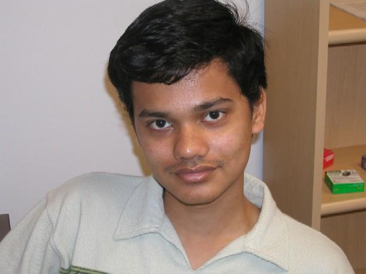

 I'm a Software Engineer at Google working in the field of Conversational AI research. Previously, I completed my PhD at University of Southern California in Computer Science. I am worked at Institute for Creative Technologies under the guidance of my advisor Prof. David Traum. I was a member of the ICT Natural Language Dialogue Group. Before joining USC, I completed my B.Eng. in Computer Engineering from Veermata Jijabai Technological Institute, Mumbai, India.